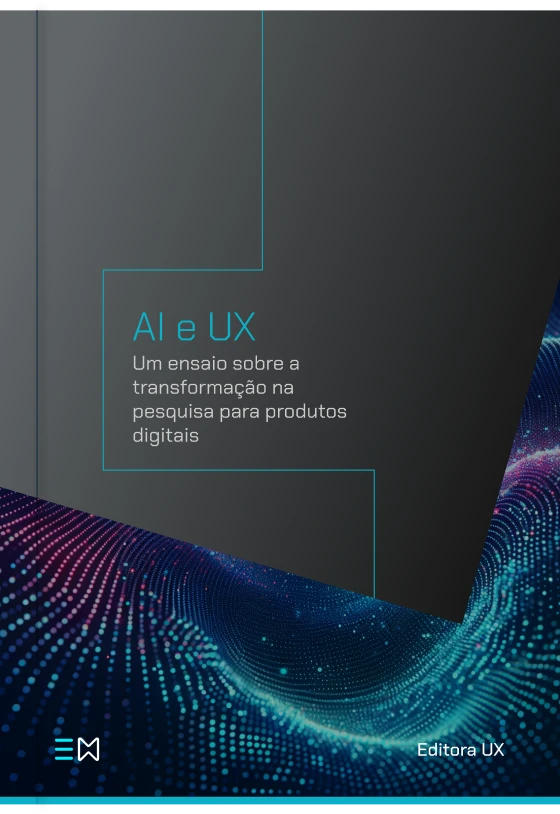
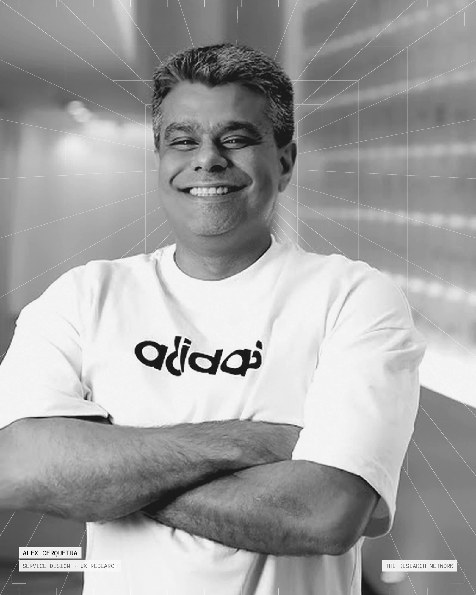

Alex CerqueiraPesquisa de Serviços e Produtos
Entender pessoas. Conectar produto. Impactar negócios.
Investigo comportamentos, identifico oportunidades e conecto pessoas, negócios e tecnologia para projetar melhores produtos e serviços.
Pesquisa · Estratégia · Pensamento Sistêmico · IA
Role
01Trabalhos selecionados
Da complexidade à clareza.
Projetos e investigações que conectam evidências, decisões e experiências.


02Abordagem
Curiosidade como ponto de partida.Evidências como direção.
Role a página: as evidências se organizam em uma planta de serviço viva, conectando pessoas, negócio, tecnologia e sistemas a cada etapa.
Entender. Contexto, pessoas, objetivos e restrições. Antes de qualquer solução, entender o que está em jogo e para quem.
Pesquisa documental · Partes interessadas · Observação
Explorar. Investigar comportamentos, necessidades e fricções no uso real — e as tecnologias e sistemas que os condicionam.
Campo · Entrevistas · Dados
Conectar. Cruzar evidências dispersas, encontrar padrões e formular descobertas que expliquem o porquê dos comportamentos.
Síntese · Jornadas · Ecossistemas
Projetar. Converter descobertas em oportunidades, conceitos de serviço e decisões que equilibrem pessoas, negócio e tecnologia.
Cocriação · Planta de serviço · Protótipos
Validar. Testar com quem usa, medir se a mudança gera valor e devolver o aprendizado ao próximo ciclo.
Testes · Experimentos · Indicadores
03Especialidades
Diferentes lentes.Uma perspectiva conectada.
-
A
Service Design
Serviços de ponta a ponta: pessoas, canais, processos internos e as relações que sustentam cada experiência.
Plantas de serviço · Ecossistemas · Jornadas
-
B
UX Research
Pesquisa como base de decisão: entender comportamentos e necessidades antes de definir soluções.
Entrevistas · Campo · Usabilidade · Síntese
-
C
Strategy & Discovery
Enquadrar o problema certo, conectar evidências a objetivos de negócio e priorizar oportunidades.
Enquadramento · Oportunidades · Priorização
-
D
AI & Emerging Experiences
Como a inteligência artificial transforma a pesquisa, os produtos e a relação entre pessoas e tecnologia.
IA na pesquisa · Confiança · Prototipação
04Artigos
Pensar. Investigar. Compartilhar.
Reflexões sobre pesquisa, sistemas, tecnologia e o futuro das experiências digitais.
- 01O poder transformador do Design Thinking e da pesquisa em UXMedium · Perfil pessoal
- 02Gestão de projetos em pesquisa para designMedium · Perfil pessoal
- 03Transformando ideias em produtos de sucessoMedium · Perfil pessoal
- 04Árvores de KPI, usuário e métricas de produtoMedium · Perfil pessoal
- 05Importância da Consistência de um Design System como parte de valor da MarcaMedium · Perfil pessoal
- 06Planejamento ágil para Design SystemMedium · Perfil pessoal
- 07Organize seu projeto de tecnologia no ConfluenceMedium · Perfil pessoal
- 08Aplicando Behavioral Design para melhorar a experiência do usuárioMedium · Perfil pessoal
- 09Product Discovery: a importância estratégica da pesquisaMedium · Perfil pessoal
- 10Design tokens e a escalabilidade do Design SystemMedium · Perfil pessoal
- 11Features de produto: Matriz Kano e Value MatrizMedium · Perfil pessoal
- 12Network Theory and Predictive Analysis: The Case of ConclaveMedium · Perfil pessoal
- 13UX e Product-Led Growth — PLGEditora UX
- 14Writing e SEO na era da AIEditora UX
- 15Teoria de Redes e Análise Preditiva: O Caso do ConclaveEditora UX
- 16Lean UXEditora UX
- 17ROI em UXEditora UX
- 18Dados de Negócio, Inteligência de Mercado e ProcessosEditora UX
- 19Métricas de ProdutoEditora UX
- 20Business QuantumEditora UX
- 21O Processo de Governança de Sistemas de DesignEditora UX
- 22Systems ThinkingEditora UX
- 23Método de Pesquisa UXEditora UX
- 24Qualidade em Usabilidade — ISO 9126Editora UX
- 25UX MétricaEditora UX
- 26Research e GrowthEditora UX
- 27User-Centered InnovationBootcamp
- 28Early Adopters in the Success of InnovationBootcamp
- 29The Transformative Power of Design Thinking and UX ResearchBootcamp
- 30Systemic Thinking and Design ThinkingBootcamp
- 31Persona Research and Usability TestingBootcamp
- 32Persona Research and Usability Testing — Exploring an Integrated ApproachBootcamp
- 33Strategy Research on Digital Products and New Interface UsabilityBootcamp
- 34UX Research Strategy for Digital ProductsBootcamp
- 35I, Robot and AI TechnologiesBootcamp
- 36Operant Conditioning and Behavioral DesignBootcamp
- 37Innovation for Products, Services, and ProcessesBootcamp
- 38Double Diamond ReverseBootcamp
- 39Generic Strategies of Michael Porter x Strategic Typology of Miles & SnowBootcamp
- 40Network Theory and Predictive Analysis: The Case of Conclave — versão em inglêsBootcamp
- 41Generative AI and Its Approach to DesignUX Planet
- 42UX 3.0UX Planet
- 43The End of the User Interface?UX Planet
- 44Turning Insights into Growth and RevenueUX Planet
- 45Padrões de leitura na web: A experiência de escanear informaçãoUX Collective Brasil
- 46Harness Engineering: a arquitetura invisível que torna a IA confiávelUX Collective Brasil
- 47O que o Nobel de Economia tem a ver com designers?UX Collective Brasil
- 48A teia de LuhmannUX Collective Brasil
- 49Design Systems e IA na práticaUX Collective Brasil
- 50The Invisible Architecture That Makes AI Trustworthy — versão em inglêsAgile Insider
- 51Measuring the Value of a Design System with AIDesign Systems Collective
05Livros
Ideias que se tornam conhecimento.

Livro · Ensaio · 2024
AI e UXUm ensaio sobre a transformação na pesquisa para produtos digitais
- Autor
- Alex Cerqueira
- Ano
- 2024
- Editora
- Editora UX
- Sinopse
O livro aborda e analisa uma perspectiva conceitual de evolução, a pesquisa em Experiência do Usuário (UX) e a integração da Inteligência Artificial (IA).
Esta abordagem começa destacando a importância histórica da pesquisa em UX no design de produtos digitais, enfatizando a compreensão das necessidades, comportamentos e motivações humanas para o desenvolvimento de soluções eficazes.
06Sobre
Design é uma forma deinvestigar o mundo.

Sou Alex Cerqueira, profissional de Design de Serviços e Pesquisa em UX. Meu trabalho parte da curiosidade em compreender como pessoas se relacionam com produtos, serviços e sistemas.
Acredito que boas experiências começam antes da interface: na compreensão dos comportamentos, na identificação de necessidades e na conexão entre evidências e decisões.
Exploro a interseção entre pesquisa, estratégia, tecnologia e inteligência artificial para transformar complexidade em oportunidades de evolução.
- Foco
- Design de Serviços · Pesquisa em UX
- Interseções
- Pesquisa · Estratégia · Tecnologia · IA
- Base
- São Paulo, Brasil
07Contato
Vamos dar sentidoà simplicidade.
- LinkedInin/alexcerqueirabr
- Medium@alexcerqueirabr
- E-mail[inserir e-mail]reservado
Vamos conversar sobre pesquisa, serviços, experiências e novas possibilidades.